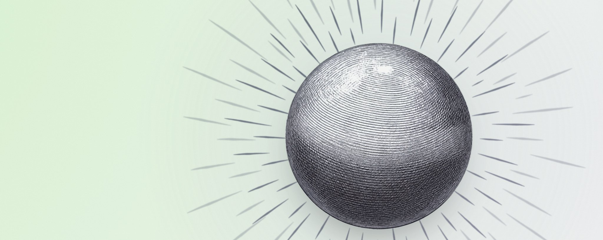

我怎么跟 Agent 一起工作
How I work with Agents
- 分类
- AI
- 来源
- X · @thorstenball
- 原文
- 整理
- 作者
- Thorsten Ball / @thorstenball
核心观点 / Highlights
译者补充，不是原文。
- 只用最新最强的模型。错 10% 的模型，你不知道是哪 10%，只能反复重试；省下的钱抵不上浪费的时间。
- 说「要什么」，别说「怎么做」。描述目标和终态，往往比规定实现路径效果更好。
- 让整个 SDLC 对 Agent 可见。看不见的东西它就会编；给它工具去跑、读线上日志、部署、发版、开 flag、处理 bug、给客户发邮件。
- 要求无可辩驳的证据，并且别等 Agent。让它交端到端演示、视频、前后数据；任务给大一点、走异步、批量交代，再配上定时 / 唤醒 / 心跳。
- 只审高爆炸半径的代码。不到 5 个核心文件和数据库迁移必看；命名、写法、甚至重复都不再在意——关键是能跑、能看懂架构、测过端到端、一个月后还能改。

模型与心态
……以下是截至 2026 年 10 月的做法。
用最新、最强的模型 · Use the latest and greatest models.
其他一切都可能是在浪费时间。如果一个模型有 10% 的时候是错的，你不知道是哪 10%，于是你最后要尝试好几次。你什么时候真的想雇一个便宜 50%、但也会随机笨 20% 的通才？还有谁在用 Opus 4.5？就是嘛。
别再担心「垃圾代码越堆越多」 · Stop worrying about accumulating slop.
「它会把你的代码库变成一团没法维护的烂摊子。」也许六个月前是这样。现在？我不确定它会增加垃圾（slop）。就算会，我也不确定结果就没法维护。
提示「要什么」，而不是「怎么做」 · Prompt the What, not the How.
描述你想要什么（What），而不是你会怎么做（How）。这样往往能得到更好的结果。
- 「把字节码编译器和虚拟机做到你能做到的最快。不到快 2 倍不要停。」
- 「它最终应该这样工作：……」
让 Agent 看见整个 SDLC
让整个 SDLC 对 Agent 清晰可读 · Make the whole SDLC legible to the agent.
是什么止住了幻觉？工具调用。工具让 Agent 能触碰我们的现实。如果 Agent 看不见某样东西，它就会编出来。所以，让它端到端地运行自己构建的东西，让它读生产日志、部署、盯着灰度发布、切发版、打开功能开关（flag）、分诊 bug 报告、给客户发邮件。凡是你能看见的，Agent 也应该看见。
给它覆盖 SDLC 的工具 · Give it tools for the SDLC.
我们有自定义插件，用来处理 bug 报告、给用户发邮件、回答「我们的系统健康吗？」，以及开通功能开关（feature flags）。
评测 Agent 用的知识 · Eval agentic knowledge.
知识会在代码库里越积越多：AGENTS.md 文件、skills、脚本、文档。可 Agent 真的会用它们吗？派出五个「盲测」Agent，分对照组和实验组，找出答案。Agent 真的、真的很擅长做实验。
本地开发现在感觉很别扭 · Local dev feels yucky now.
每个 Agent 都应该能安装并运行完成任务所需的任何东西。在远程机器上这很容易，在本地开发里就很别扭。当你想让 Agent 端到端测试东西时，本地很难不撞上资源冲突。
迭代与证据
别跟 Agent 来回迭代，让它造迭代用的工具 · Don’t iterate with the agent. Let it build tools to iterate.
不是「我们试试这个……啊不对，试试那个」。而是：「生成 20 个变体，再做一个小页面，让我把它们组合起来测试。」
这不只适用于解空间，也适用于问题空间：「给我 4 个关于它为什么这么慢的理论，然后把四个都检查一遍。」
要求无可辩驳的证据 · Ask for irrefutable proof.
这是最大的颠覆。Agent 非常擅长产出证据：端到端的走查、演示视频、前后对比的数字。你得为此建立信任和直觉。把「这不算证据」写进你的 AGENTS.md。
异步、定时与上下文
别等你的 Agent，让它们等你 · Don’t wait for your agents. Let them wait on you.
如果你在担心 TTFT（首个 token 的响应时间），你多半做错了什么。拥抱异步。给它们更大的任务，更有野心一点。批量交代，而不是来回拉扯。
自动化 / 定时 / 唤醒 / 心跳是杀手级功能 · Automation/schedules/wake-up/heartbeat are killer feature.
我原先没意识到，可一旦它被关掉，我就非常想念它。我一直在用：
- 「2 小时后检查一下日志。」
- 「这个上线了告诉我。」
- 「每天早上 9 点检查一次。」
别再手动管理上下文 · Stop manually managing context.
你每花一点心思去琢磨「它现在用了 30 万还是 38 万个 token？」，都是浪费时间。压缩（compaction）效果好得惊人。别手动管理上下文。一个 thread = 一个任务。有些 thread 是 46 条消息，有些是 3,714 条。
Thread 就是你们公司的记忆 · Threads are your company memory.
（在 Amp 里）「我们当初为什么这么做？」团队用 Amp 越多，知识就越成倍增长。Thread 和 git 提交相关联。这是颠覆性的。它能避免重复劳动。
写作与审查
别让 Agent 替人写给人看的东西 · Don’t let agents write for humans.
例外：调试步骤、事故报告（incident reports）、部分文档。也就是那些机械性的东西，另一端的人是谁没那么重要。
只审爆炸半径大的代码 · Review only code with high blast radius.
有不到 5 个核心文件——那些我会审。数据库迁移，要审。闭包还是类、更整洁的类型、变量名，甚至重复代码：我已经不在乎了。
它能跑吗？我在「架构图上的箭头」这个层面理解它吗？Agent 端到端测过它吗？一个月后我还能改它吗？如果答案是肯定的，我也许会审一下代码。